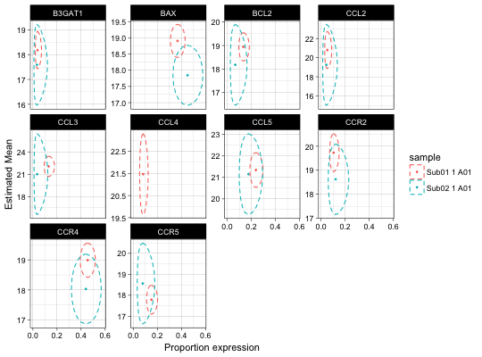

The focus of the ellipse will be the point (x, y) and semi-major axes aligned with the coordinate axes and scaled by xse, yse and the level.
stat_ell(mapping = NULL, data = NULL, geom = "polygon",
position = "identity", na.rm = FALSE, show.legend = NA,
inherit.aes = TRUE, fill = NA, level = 0.95, lty = 2,
invert = FALSE, alpha = 1, ...)
Arguments
- mapping
- Set of aesthetic mappings created by aes or aes_. If specified and inherit.aes = TRUE (the default), it is combined with the default mapping at the top level of the plot. You must supply mapping if there is no plot mapping.
- data
- The data to be displayed in this layer. There are three options: If NULL, the default, the data is inherited from the plot data as specified in the call to ggplot. A data.frame, or other object, will override the plot data. All objects will be fortified to produce a data frame. See fortify for which variables will be created. A function will be called with a single argument, the plot data. The return value must be a data.frame., and will be used as the layer data.
- geom
- The geometric object to use display the data
- position
- Position adjustment, either as a string, or the result of a call to a position adjustment function.
- na.rm
- If FALSE (the default), removes missing values with a warning. If TRUE silently removes missing values.
- show.legend
- logical. Should this layer be included in the legends? NA, the default, includes if any aesthetics are mapped. FALSE never includes, and TRUE always includes.
- inherit.aes
- If FALSE, overrides the default aesthetics, rather than combining with them. This is most useful for helper functions that define both data and aesthetics and shouldn't inherit behaviour from the default plot specification, e.g. borders.
- fill
- A color or aesthetic mapping to fill color. Defaults to NA for empty ellipses.
- level
- The confidence level at which to draw an ellipse (default is level=0.95).
- lty
- The linetype to use. Can map to a variable. Defaults to 2 (dashed line)
- invert
- vector of length 1 that should either be
"x","y",or TRUE. Specifies whether to plot the estimates from the discrete component on the inverse logit scale. invert specifies which axis to invert.
- alpha
- transparency
- ...
- other arguments passed on to layer. These are often aesthetics, used to set an aesthetic to a fixed value, like color = "red" or size = 3. They may also be parameters to the paired geom/stat.
Value
ggplot layer
Examples
#>
#> Done!
#> Warning: Removed 1 rows containing non-finite values (stat_ell).
#> Warning: Removed 1 rows containing missing values (geom_point).
